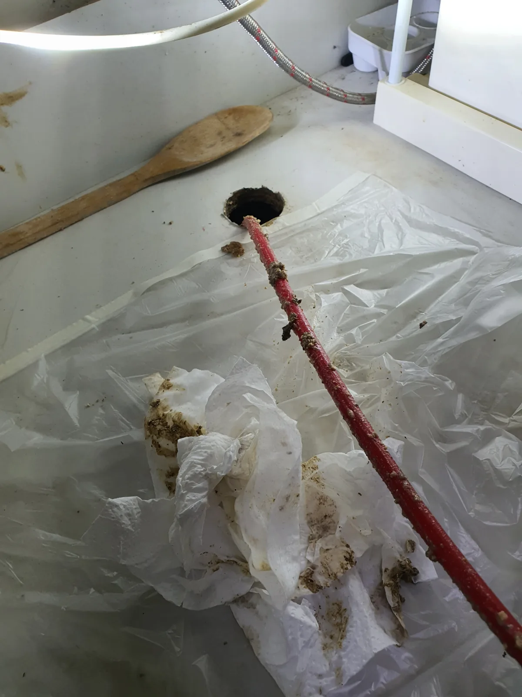
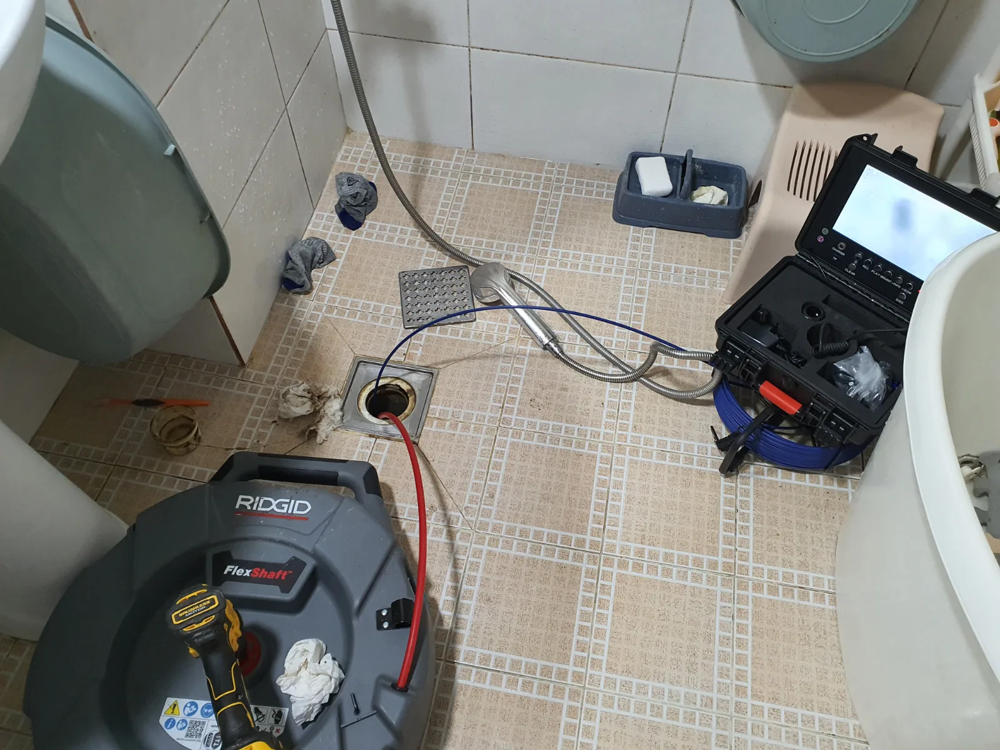

수원시 권선구 권선동 싱크대막힘, 현장 도착 후 진단
수원시 권선구 권선동 빌라에서 싱크대 배수가 원활하지 않은 현장을 방문했습니다. 신라건축설비는 이번 싱크대막힘을 처리하기 위해 하부장을 열고 아래쪽 배관에 접근했습니다. 싱크대 위에서 물이 내려가지 않는 증상이 보이더라도 실제 작업은 하부 연결부와 그 아래 배수 통로에서 필요할 수 있습니다. 먼저 하부장 안쪽에서 작업할 위치를 살핀 뒤 샤프트 작업을 진행했습니다.
권선동 빌라 싱크대막힘 작업에서는 주방 쪽 배관과 함께 화장실 바닥 배관도 고려했습니다. 빌라에는 싱크대와 화장실 바닥의 배수가 연결되는 구조가 있을 수 있어, 주방에서 나타난 증상만으로 점검 범위를 좁히지 않는 것이 중요합니다. 건물마다 연결 방식은 다르므로 빌라라는 이유만으로 모두 같은 구조라고 판단할 수는 없습니다. 이번 현장에서는 싱크대 하부에 이어 화장실 바닥 쪽에서도 샤프트 작업을 진행했습니다.
수원시 권선구 싱크대막힘 사례의 특징은 두 작업 지점에서 배수 통로를 정리하고 마지막 통수 상태까지 확인한 점입니다. 싱크대 하부 작업 사진과 화장실 바닥 작업 사진이 각각 남아 있어 접근 위치의 차이도 확인할 수 있습니다. 하부 배관에서 어떤 작업을 했는지, 다른 배수구 쪽으로 작업을 이어간 이유가 무엇인지 순서대로 설명드리겠습니다.
1단계: 증상 확인과 필요한 장비 작업
하부장을 연 상태에서 싱크대 아래 배관으로 샤프트를 넣어 작업했습니다. 이번 싱크대막힘 사진에는 배관 입구로 들어간 작업 호스와 그 주변에 묻어나온 찌꺼기가 보입니다. 배관에 접근하는 위치와 작업 과정에서 나온 이물질을 함께 확인할 수 있는 장면입니다. 싱크대 배수구 위쪽만 만지는 방식이 아니라 하부 배관에 접근해 막힌 통로를 대상으로 작업했습니다.
샤프트는 배관 안에 붙어 있는 찌꺼기와 이물질을 풀어내는 데 사용했습니다. 권선동 싱크대막힘은 실제 배수관 안쪽을 대상으로 작업해야 했기 때문에 하부장 안에서 접근 경로를 확보하는 과정이 필요했습니다. 배관 작업에서는 입구 주변의 오염을 치우는 것과 내부 통로를 정리하는 일을 구분해야 합니다. 이번에는 샤프트를 이용해 하부 배관을 작업하고 다음 지점으로 이어갔습니다.
하부장 내부는 수납공간과 배관이 가까이 있는 곳입니다. 사진에서는 배관 입구 주변에 비닐을 펼쳐 작업한 상태도 확인할 수 있습니다. 작업 중 드러난 찌꺼기만으로 오염물의 모든 성분을 특정할 수는 없지만, 배수 통로를 정리하는 과정에서 이물질이 나왔다는 점은 볼 수 있습니다. 상담할 때도 막힘 원인을 미리 하나로 단정하기보다 싱크대 아래 연결부와 배수 상태를 함께 보여주시면 현장 파악에 도움이 됩니다.

2단계: 원인 구간 처리와 정상 작동 확인
싱크대 하부 배관을 작업한 뒤 화장실 바닥 쪽에서도 샤프트 작업을 진행했습니다. 이번 빌라 싱크대막힘에서는 주방과 떨어진 위치의 배수 통로까지 함께 살펴 작업한 것입니다. 화장실 바닥 사진에는 배수구 덮개를 열고 작업 호스를 넣은 모습이 담겨 있습니다. 같은 샤프트 작업이라도 주방 하부와 화장실 바닥은 접근 위치가 다르므로 각 지점에서 필요한 작업을 진행했습니다.
주방과 화장실 배수가 연결되는 구조라면 한쪽 배수구에서 나타나는 불편을 그 입구만의 문제로 보기 어려울 수 있습니다. 싱크대가 막혔을 때 화장실 바닥 하수구막힘 증상도 있는지 함께 알려주시면 점검 범위를 판단하는 데 도움이 됩니다. 이번 권선구 싱크대막힘 현장에서는 싱크대 하부 작업에 그치지 않고 화장실 바닥 배관 작업까지 이어간 뒤 통수테스트를 진행했습니다.
배관 안으로 장비를 넣었다는 사실만으로 결과를 판단하지 않고 실제 물 흐름을 확인했습니다. 배관 작업과 통수 확인은 역할이 다릅니다. 앞의 과정이 막힌 통로를 정리하는 작업이라면 마지막 과정은 물을 사용했을 때 배수가 이루어지는지 확인하는 단계입니다. 이번 현장도 두 지점의 작업을 마친 뒤 통수 상태를 꼼꼼하게 살피며 마무리했습니다.

작업 결과와 재발 방지 안내
작업을 마친 뒤에는 통수테스트를 진행해 싱크대에서 물이 빠지는 상태를 확인했습니다. 아래 영상은 권선동 빌라 싱크대막힘 처리 후 촬영한 통수 장면입니다. 싱크대 배수구 쪽으로 물이 흘러가며 빠지는 모습을 담고 있어 작업 결과를 사진과 함께 살펴볼 수 있습니다. 하부장 안쪽과 화장실 바닥 배관의 작업 위치는 두 장의 현장 사진으로 확인할 수 있습니다.
빌라 싱크대막힘이 생겼을 때에는 어느 곳에서 물을 사용하면 배수가 불편한지 살펴보는 것이 좋습니다. 주방만 느린지, 화장실 바닥에서도 비슷한 증상이 있는지에 따라 현장에서 함께 확인할 지점이 달라질 수 있습니다. 다만 물이 빠지지 않는 상태에서 확인하려고 계속 물을 흘려보내기보다는 사용을 멈추고 현재 상태를 사진이나 짧은 영상으로 남겨주세요. 음식물 찌꺼기와 남은 기름은 배수구로 한꺼번에 흘려보내지 않도록 관리하는 것이 좋습니다.
수원시 권선구 권선동에서 싱크대뚫는업체를 찾으신다면 하부 배관의 작업 위치와 처리 과정, 최종 통수 확인까지 살펴보세요. 주방 배수불량과 화장실 바닥 하수구막힘이 함께 의심되는 상황이라면 두 곳의 상태를 같이 알려주시는 것이 도움이 됩니다. 신라건축설비는 이번 싱크대막힘 현장에서 하부장 내부와 화장실 바닥 배관을 각각 작업하고, 물이 빠지는 상태를 확인하며 마무리했습니다.
최종 조치: 싱크대 하부 배관과 화장실 바닥 배관에서 각각 샤프트 작업을 진행하고, 마지막 통수테스트로 물이 빠지는 상태를 확인했습니다.
현장 영상
현장 방문 전 확인하는 비용과 작업 범위
신라건축설비는 현장 증상과 배관 구조를 확인한 뒤 필요한 작업과 예상 비용을 안내합니다. 단순 관통으로 해결되는지, 배관내시경·석션·고압세척 또는 추가 장비가 필요한지는 현장 상태에 따라 달라집니다. 출장비와 야간 작업비, 추가 장비 비용이 발생할 수 있는 경우 작업 전에 먼저 설명하고 동의를 받은 범위에서 진행합니다.
업체를 선택할 때 확인할 사항
무조건적인 ‘0원’ 표현보다 실제 작업 범위, 추가 비용 조건, 사용 장비와 사후 대응 기준을 확인하는 것이 중요합니다. 해결되지 않았을 때의 비용 기준과 작업 후 동일 증상 발생 시 점검 범위를 사전에 문의해두면 불필요한 분쟁을 줄일 수 있습니다.
수원시 권선구 싱크대막힘 자주 묻는 질문
싱크대막힘은 왜 반복되나요?
주방 배수관 내부에 기름때·슬러지·음식물 찌꺼기가 누적되거나 배관 구배와 긴 횡주관 때문에 반복될 수 있습니다. 단순 관통 후 다시 막힌다면 배수관 내부 상태를 확인하는 것이 좋습니다. 이번 수원시 권선구 권선동 현장에서 확인한 원인은 다음과 같습니다. 배수 통로의 막힘을 처리하는 과정에서 찌꺼기와 이물질이 확인됐으며, 싱크대 하부와 화장실 바닥 배관을 함께 작업했습니다.
싱크대 물이 안 내려가거나 역류하면 싱크대뚫는업체를 불러야 하나요?
물이 천천히 빠지거나 싱크대역류가 반복되면 배수구 입구보다 안쪽 주방 배관에 막힘이 있을 수 있습니다. 현장에서는 배수 상태와 막힌 구간을 확인한 뒤 작업 방법을 정합니다.
싱크대 기름때 막힘은 약품으로 해결되나요?
가벼운 오염은 일시적으로 나아질 수 있지만 굳은 기름 슬러지와 배관 내부 스케일은 약품만으로 충분히 제거되지 않는 경우가 있습니다. 반복 막힘은 장비를 이용한 배관 청소가 필요할 수 있습니다.
싱크대뚫는업체는 어떤 장비로 작업하나요?
막힘 위치와 배관 상태에 따라 석션, 샤프트, 배관내시경, 배관 스케일링 장비 등을 사용합니다. 필요한 장비는 현장 진단 후 결정합니다.
싱크대막힘 비용은 어떻게 정해지나요?
막힘 구간의 길이와 오염 정도, 석션·샤프트·내시경 등 장비 투입 범위에 따라 달라질 수 있습니다. 작업 전 예상 범위와 추가 비용 조건을 먼저 안내합니다.
싱크대 악취도 배수관 막힘과 관련 있나요?
기름 슬러지와 음식물 오염이 배수관 내부에 쌓이면 배수 불량과 함께 악취가 나타날 수 있습니다. 다만 트랩이나 연결부 문제도 있어 현장 상태를 함께 확인해야 합니다.
싱크대막힘 서울·경기 출동지역
신라건축설비는 수원시 권선구 권선동 현장을 포함해 서울 25개 구와 경기도 31개 시·군의 배관 문제를 상담합니다. 현장 거리와 기사 배정 상황에 따라 출동 가능 여부를 먼저 안내드립니다.
서울 전 지역
강남구 · 강동구 · 강북구 · 강서구 · 관악구 · 광진구 · 구로구 · 금천구 · 노원구 · 도봉구 · 동대문구 · 동작구 · 마포구 · 서대문구 · 서초구 · 성동구 · 성북구 · 송파구 · 양천구 · 영등포구 · 용산구 · 은평구 · 종로구 · 중구 · 중랑구
경기도 주요 출동지역
수원시 · 용인시 · 고양시 · 화성시 · 성남시 · 부천시 · 남양주시 · 안산시 · 평택시 · 안양시 · 시흥시 · 파주시 · 김포시 · 의정부시 · 광주시 · 하남시 · 광명시 · 군포시 · 양주시 · 오산시 · 이천시 · 안성시 · 구리시 · 의왕시 · 포천시 · 양평군 · 여주시 · 동두천시 · 과천시 · 가평군 · 연천군